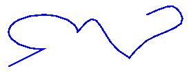
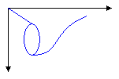
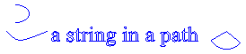

Контуры в GDI+
Пути сформированном путем объединения линии, прямоугольники и простой кривых. Как следует из Общие сведения о векторной графики что следующих основных блоков оказались наиболее подходят для рисования изображений:
Прямых линий
Прямоугольники
Многоточие
Дуги
Многоугольники
Фундаментальные сплайны
Сплайны Безье
В GDI + GraphicsPath объект позволяет собирать последовательность из этих блоков в единое целое. Вся последовательность линии, прямоугольники, многоугольники и кривых могут быть нарисована за одно обращение DrawPath метод Graphics класса. Ниже показан путь, полученное путем объединения строки, дуги, сплайна Безье и фундаментальный сплайн.

С помощью пути
GraphicsPath Класс предоставляет следующие методы для создания последовательность элементов для отрисовки: AddLine, AddRectangle, AddEllipse, AddArc, AddPolygon, AddCurve (для фундаментальные сплайны), и AddBezier. Каждый из этих методов перегружена; то есть каждый метод поддерживает несколько различными списками параметров. Например, один из вариантов AddLine метод получает четырех целых чисел, а в другом варианте AddLine метод получает два Point объектов.
Методы для добавления линии, прямоугольники и сплайны Безье в пути имеют вспомогательные методы, выполняющие добавьте несколько элементов пути за один вызов: AddLines, AddRectangles, и AddBeziers. Кроме того AddCurve и AddArc методы существуют вспомогательные методы AddClosedCurve и AddPie, которые расширяют секции замкнутой кривой или круговой путь.
Чтобы нарисовать контур, вам потребуется Graphics объекта, Pen объекта и GraphicsPath объекта. Graphics Предоставляет DrawPath метод и Pen объект сохраняет атрибуты, например, ширина и цвет линии, используемый для визуализации путь. GraphicsPath Объект сохраняет последовательность линий и кривых линий, составляющих путь. Pen Объекта и GraphicsPath объекта передаются как аргументы для DrawPath метод. В следующем примере рисуется путь, который состоит из строки, эллипс и сплайн Безье:
myGraphicsPath.AddLine(0, 0, 30, 20);
myGraphicsPath.AddEllipse(20, 20, 20, 40);
myGraphicsPath.AddBezier(30, 60, 70, 60, 50, 30, 100, 10);
myGraphics.DrawPath(myPen, myGraphicsPath);
Warning
It looks like the sample you are looking for does not exist.
На следующем рисунке путь.

Помимо добавления линии, прямоугольники и кривые к пути, можно добавить пути к пути. Это позволяет объединять существующие пути для формирования больших и сложных путей.
myGraphicsPath.AddPath(graphicsPath1, false);
myGraphicsPath.AddPath(graphicsPath2, false);
Warning
It looks like the sample you are looking for does not exist.
Два других элемента, можно добавить в путь: строку и сектор. Сектор — часть внутреннюю часть эллипса. В следующем примере создается путь из дуги, фундаментальный сплайн, строка и сектора:
GraphicsPath myGraphicsPath = new GraphicsPath();
Point[] myPointArray = {
new Point(5, 30),
new Point(20, 40),
new Point(50, 30)};
FontFamily myFontFamily = new FontFamily("Times New Roman");
PointF myPointF = new PointF(50, 20);
StringFormat myStringFormat = new StringFormat();
myGraphicsPath.AddArc(0, 0, 30, 20, -90, 180);
myGraphicsPath.StartFigure();
myGraphicsPath.AddCurve(myPointArray);
myGraphicsPath.AddString("a string in a path", myFontFamily,
0, 24, myPointF, myStringFormat);
myGraphicsPath.AddPie(230, 10, 40, 40, 40, 110);
myGraphics.DrawPath(myPen, myGraphicsPath);
Warning
It looks like the sample you are looking for does not exist.
На следующем рисунке путь. Обратите внимание, что путь не обязательно должен быть подключен; arc, фундаментальный сплайн, строка и круговой разделены.
